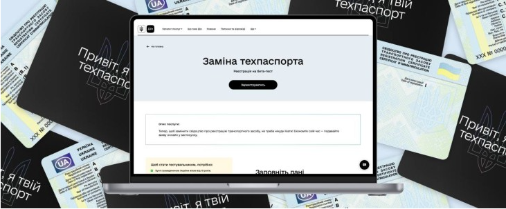

Як замінити техпаспорт онлайн через ДІЮ?
Завдяки застосунку ДІЯ, процес заміни свідоцтва про реєстрацію транспортного засобу (техпаспорта) став максимально простим і доступним. Тепер ви можете здійснити цю операцію всього за кілька кліків на своєму смартфоні, уникаючи зайвих візитів до сервісних центрів.
auto ins, автоинс, аутоинс, ауто инс, autoins, автоинс, авто инс, автоінс, авто інс, ауто інс,
Коли потрібна заміна техпаспорта онлайн?
-
Зміна персональних даних: Якщо ваші дані, зазначені в техпаспорті, змінилися.
-
Втрата або пошкодження документа: У разі втрати або пошкодження існуючого свідоцтва.
-
Заміна номерних знаків: Якщо ви вирішили замінити державний номерний знак свого авто.
-
Перехід на інший формат: Бажаєте отримати цифровий техпаспорт або його пластиковий аналог.
Як працює послуга в Дії?
Процес заміни техпаспорта в застосунку Дія інтуїтивно зрозумілий і складається з кількох простих кроків:
-
Відкрийте застосунок Дія: Перейдіть до розділу "Сервіси", потім оберіть "Водієві" та "Заміна техпаспорта". Альтернативно, ви можете знайти цю опцію безпосередньо в меню вашого документа.
-
Оберіть причину заміни: Визначте, чому вам потрібна заміна документа, і за потреби замовте нові номерні знаки.
-
Виберіть формат техпаспорта: Оберіть зручний для вас варіант – лише цифровий формат або цифровий у поєднанні з пластиковим документом.
-
Вкажіть спосіб доставки: Оберіть зручний спосіб отримання – у відділенні "Укрпошти" або кур'єром "Укрпошти" за вказаною адресою.
-
Перевірка та оплата: Уважно перевірте всі введені дані, підпишіть заяву та здійсніть оплату протягом 24 годин.
Умови для отримання послуги:
Для того щоб скористатися послугою онлайн-заміни техпаспорта в Дії, необхідно відповідати наступним критеріям:
-
Вік 18 років і старше.
-
Наявність РНОКПП (податкового номера) у застосунку Дія.
-
Наявність біометричного документа (паспорта або посвідки) в Дії.
-
Ви є власником транспортного засобу, і свідоцтво про реєстрацію (техпаспорт) вашого авто вже відображається в Дії.
ДІЯ - Цифрові послуги без стресу.
AUTO-INS - автоцивілка без зайвих рухів.